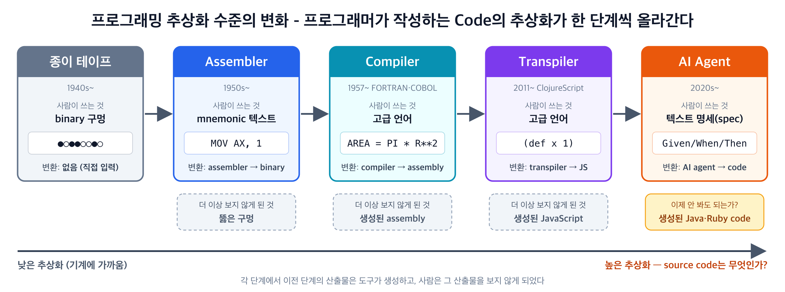
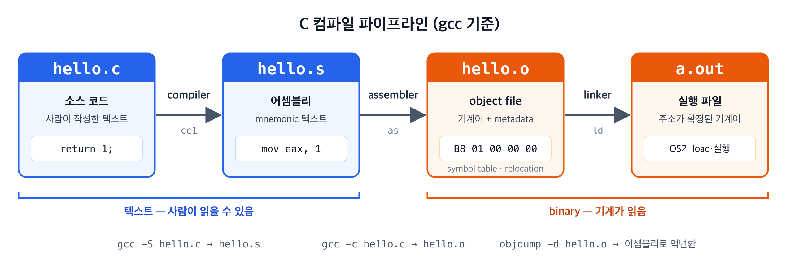
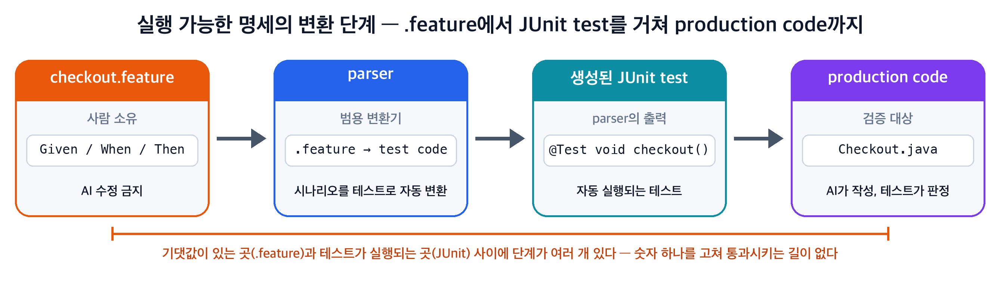

brunch · @cleancode/109
글에 쓰인 그림 세 장. 원문은 brunch.co.kr/@cleancode/109, 예제 코드는 gist.


.c → .s → .o → 실행 파일. 그림 1의 컴파일러 단계를 확대한 것이다.
.feature에서 parser, 생성된 JUnit test를 거쳐 production code까지. 기댓값과 실행 사이에 단계가 여러 개 있어 숫자 하나를 고쳐 통과시키는 길이 없다.